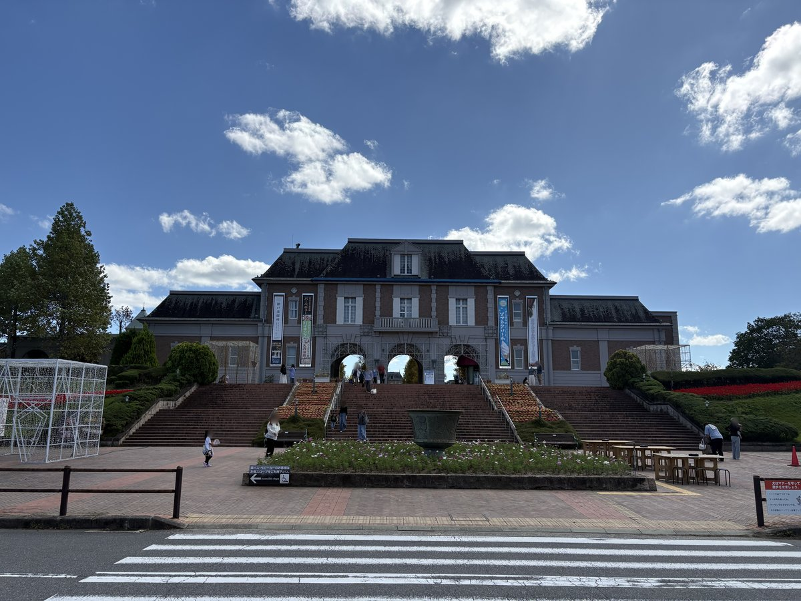

道の駅 神戸フルーツ・フラワーパーク大沢
兵庫県神戸市北区大沢町上大沢2150
駐車場
あり（無料）
トイレ
あり（洋式）
ドッグラン
あり（無料） / 小型犬エリアと全犬種共用エリアの2区画。開放は土日の9:30〜16:00で、月〜金は休場（平日の祝日は事前確認推奨）。イルミネーション期間は時間が変わり、雨天時は閉まる場合あり。
入場料
無料
公式HP
fruit-flowerpark.jp
備考・犬連れでのポイント
入場料・駐車場・ドッグラン全て無料の道の駅。ドッグランは小型犬エリアと全犬種共用エリアの2区画。
開放は土日の9:30〜16:00で、月〜金は休場（平日の祝日は事前確認推奨）。
イルミネーション期間は開放時間が変わり、雨天や施設管理のため閉まる日もある。
凶暴性のある犬・発情中のメス犬・伝染性の病気の犬・ワクチンや狂犬病予防接種を受けていない犬は入場不可で、接種証明書の提示を求められる場合があるため持参推奨。
1人が同時に放せるのは1頭まで、場内でのおやつ・フードは控えること。
園内はリード着用で散歩でき、フンは持ち帰り、マーキングはさせないこと。
多目的広場では犬を放して走らせられない。果樹園エリアはペット不可。
犬と一緒に乗れる珍しいゴーカートがあり、体高50cm以下の犬1匹まで、2人乗りで助手席の人が抱っこする場合に限り乗車可。
テラス席犬同伴OKのレストランあり。駐車場とトイレは24時間利用可。
このスポットに行った記事（ブログ）
 こつぶの誕生日は神戸フルーツ・フラワーパーク大沢で。ドッグランと、犬と乗れるゴーカート
こつぶの誕生日は神戸フルーツ・フラワーパーク大沢で。ドッグランと、犬と乗れるゴーカート